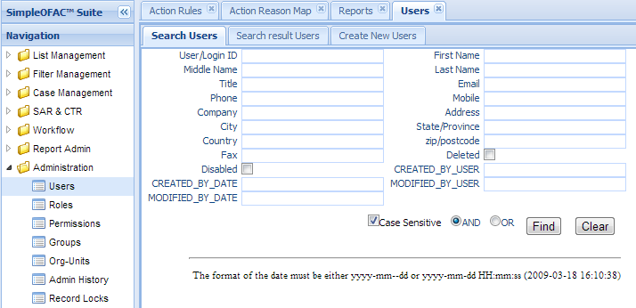

Users¶
Users function manages the users in the system. There is only one user; admin is created when the system is first initiated.
Users are the individual members of the organization who are allowed to log in to the SimpleOFAC to perform their required tasks. Those include investigators, compliance officers, administrators etc. The administrator controls the levels of functionality and the data that users can access by assigning them to Groups or by granting roles directly to each user.
Click the Users in the left navigation menu under Administration, a new Users Tab folder will created in the right panel. There are 3 sub-Tab folders, Search Users, Search Result Users and Create New Users.
Search Users¶
Search Criteria
| Field Name | Description |
|---|---|
| User/Login ID | Login Id. |
| First Name | User’s first name. |
| Middle Name | User’s middle name. |
| Last Name | User’s last name. |
| Title | The title of the user. |
| The email of the user. | |
| Phone | The phone number of the user. |
| Mobile | The mobile phone number of the user. |
| Company | The company user works for. |
| Address | User’s address. |
| City | User’s city. |
| State/Province | User’s state. |
| Country | User’s country. |
| zip/postcode | User’s postal code. |
| Fax | User’s fax number. |
| Deleted | checkbox this box if only show deleted users. |
| Disabled | checkbox this box if only show disabled users. |
| CreatedByDate | Date and Time when this entry is created |
| CreatedByUser | User who create this entry. |
| ModifiedByDate | Last modified date and time. |
| ModifiedByUser | Last modified user. |
| AND | Select AND radio box if you want those criteria add together. |
| OR | Select OR radio box if you want to get the result if either criteria meet |
Functional buttons¶
- Find: – click Find button to search.
- Clear:– click Clear button to clear all the criteria.
Search Result Users¶

The top part is the table, shows the list of the users that meet the search criteria. The bottom part is the details, Roles, Groups and combined permissions of the selected entry. Each entry can have 0 to many roles, groups and permissions. (see Roles, Groups, and Permissions for details on Roles, Groups and Permissions)
Update/Delete Users¶
Double Click the selected record in the table to modify this entry. A new Tab folder “Update/Delete Users” will be added, as show below.

Functional buttons¶
- Update: – make changes on the users, and save and switch back to “Search result users” Tab. Some of the fields in this form are read only, like User Id, created/modified user and date.
- Reset:– reset the data to its initial value, discard all the changes.
- Cancel:– Cancel this change and switch back to “Search result users” Tab.
- Roles:– Assign roles to the user. Click this button will open a pop window, as follows;
When role is assigned to users or groups, it must also specify an Organizational Unit. User can have a role A in Organization Unit X, while has role B in Organization Unit Y.
First select an orgunit from the orgunit dropdown list, then grant or revoke the roles to the user by check or uncheck the checkbox besides each role.
- Update – Click Update button to update the changes and close the pop window.
- Reset – Reset the data to its initial value, discard all the changes.
- Cancel –Cancel this change and close the pop window.
- Groups:– Assign groups to the user. Click this button will open a pop window, as follows;

Grant or revoke the group to the user by check or uncheck the checkbox besides each group.
- Update – Click Update button to update the changes and close the pop window.
- Reset – Reset the data to its initial value, discard all the changes.
- Cancel –Cancel this change and close the pop window.
Create New Users¶
Select the “Create New Users” Tab to create a new entry.

| Field Name | Description |
|---|---|
| User/Login ID | Login Id; it must be unique within the system. |
| First Name | User’s first name. |
| Middle Name | User’s middle name. |
| Last Name | User’s last name. |
| Title | The title of the user. |
| The email of the user. | |
| password(new) | User’s initial password; it can not be empty. |
| password(confrim) | User’s initial password; it must be the same as password(new). |
| Phone | The phone number of the user. |
| Mobile | The mobile phone number of the user. |
| Company | The company user works for. |
| Address | User’s address. |
| City | User’s city. |
| State/Province | User’s state. |
| Country | User’s country. |
| zip/postcode | User’s postal code. |
| Fax | User’s fax number. |
| Deleted | checkbox this box to mark this user as deleted. |
| Disabled | checkbox this box to mark this user as disabled. |
| Force Change Pass | checkbox this box to force user to change password when log in for the first time. |
| Passwd Expire | When the password will be expire. Interval in days. |
| Passwd ExpireDate | The date the password will be expire. |
| Failed LoginCount | Number of times user login failed. |
| Last Login Date | Last date user log in successfully. |
| CreatedByDate | Date and Time when this entry is created. It is a read only field. |
| CreatedByUser | User who create this this entry. It is a read only field. |
| ModifiedByDate | Last modified date and time; It is a read only field. |
| ModifiedByUser | Last modified user; It is a read only field. |
Functional buttons¶
- Create: – Click the Create button to create a new user and switch to “Search result Users” Tab.
- Clear:– Click the Clear button to clear all the fields
- Cancel:– Click the Cancel button to cancel operation and switch back to “Search result users” Tab.